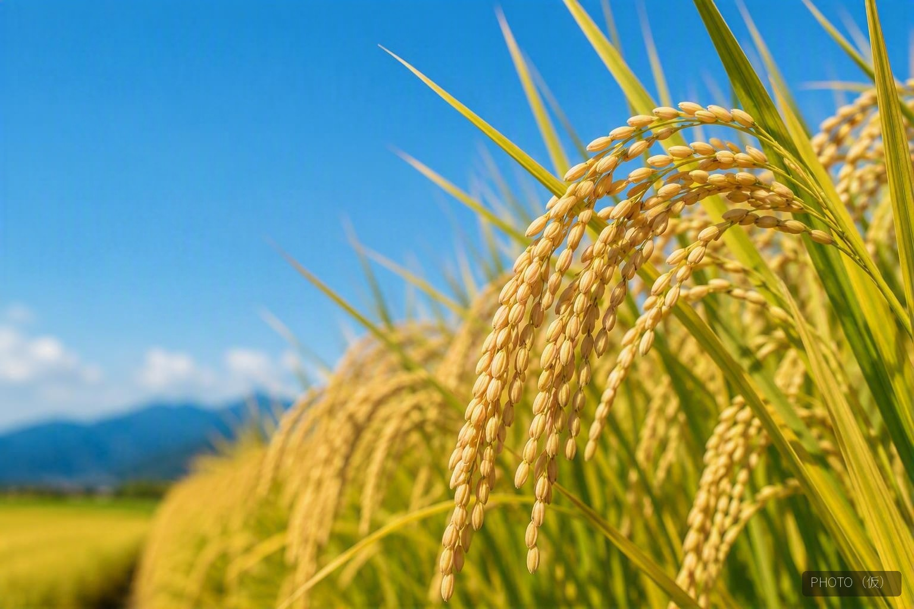
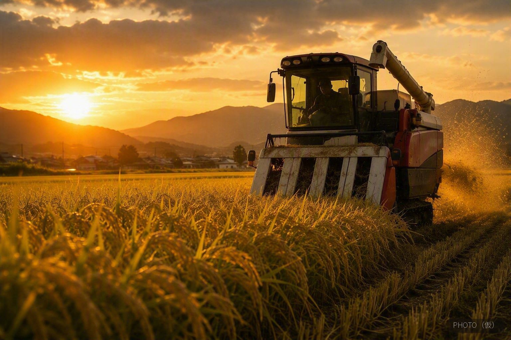
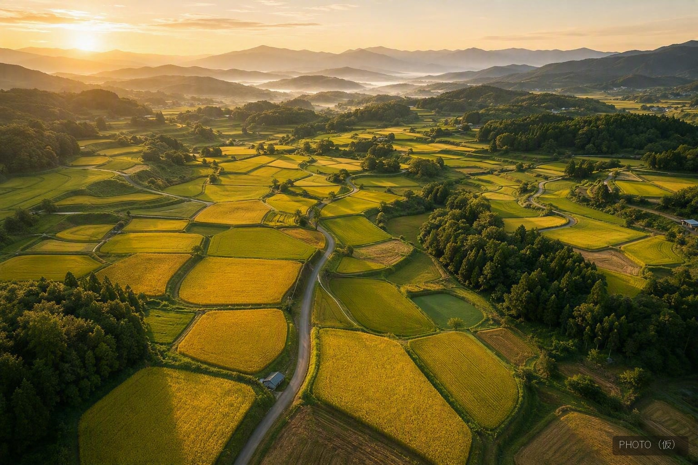

コノホシは、兵庫県とJAグループ兵庫が約9年をかけて育成した兵庫県オリジナルの水稲品種です。近年の猛暑による品質低下という課題に向き合い、高温耐性に優れた品種と食味の良い品種を交配して生まれました。
粒が大きくつややかで、ほどよい粘りと甘みがあり、冷めてももちもちとした食感が続くのが特長です。おかずとの相性もよく、おにぎりやお弁当にも向いています。特A地区の恵まれた土壌と気候で育てることで、その持ち味がより引き立ちます。
| 品種 | コノホシ（兵庫県オリジナル品種） |
|---|---|
| 産地 | 兵庫県特A地区（三木市吉川町／加東市東条町・社町） |
| 味の特徴 | 大粒でつややか、ほどよい粘りと甘み、冷めてももちもち |
| おすすめの食べ方 | 白米ごはん、おにぎり、お弁当 |
| ご購入方法 | オンラインストア（STORES）にて販売しております |

